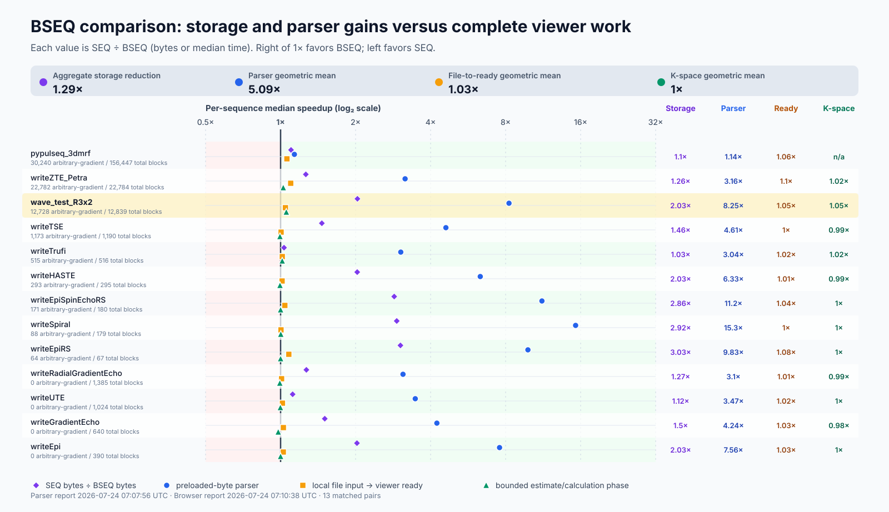

SeqEyes-Plus experiment evidence
This technical supplement documents the experiment design, implementation, source code, results, and limitations used to evaluate SeqEyes-Plus. It is a reproducibility report, not a copy of the submitted abstract and not a product landing page.
Draft evidence report · updated 24 July 2026
1. Scope and terminology
SeqEyes-Plus is the TypeScript/JavaScript, browser-native distribution in the SeqEyes lineage. It was designed from experience with SeqEyes Qt, but it does not depend on Qt or C++. The same inspection engine is packaged for a standalone browser, a VS Code custom editor, MATLAB, and Python/Jupyter workflows.
The viewer accepts Pulseq text (.seq) and binary (.bseq) inputs. It exposes
RF magnitude, RF/ADC phase, three gradient axes, ADC/trigger information, and
optional M1 and advisory SAFE-based peripheral nerve stimulation estimates.
The experiments below distinguish verified behavior from implementation
capabilities and from claims that were deliberately not made.
Evidence is separated into three layers:
| Layer | Meaning |
|---|---|
| Frozen abstract evidence | E1–E8 results collected under the predefined protocol |
| Versioned follow-up | Expanded official-sequence and 11-sequence reference results |
| Supplementary benchmark | New .seq/.bseq, 3D-MRF, and bounded 4D-flow engineering measurements |
2. Software and machine snapshots
The frozen experiments and the later format benchmark used different, explicitly recorded software snapshots. Values are not silently transferred between snapshots.
| Item | Frozen E1–E8 evidence | 24 July format benchmark |
|---|---|---|
| Computer | Apple M3 Pro, 11 logical cores, 18 GB | Same hardware class |
| Operating system | macOS 15.7.1, arm64 | darwin, arm64 |
| Node.js | 20.20.2 | 20.20.2 |
| Browser | Chromium 149.0.7827.55, headless, 1280 × 900 | Chromium 149.0.7827.55, headless, 1280 × 900 |
| MATLAB | R2024b, 24.2.0.2712019 | Not used for timing |
| PyPulseq | 1.5.0.post1 | Used for 3D-MRF generation/conversion workflow |
| SeqEyes-Plus | frozen baseline/corrective commits recorded in protocol; fixes released in v0.2.9 and v0.2.11 | package 0.2.12, plugin commit 80cabb39 |
| Workspace commit | frozen protocol records each producing commit | 84c112b |
The full frozen environment and amendment history are available in the E1–E8 protocol.
3. Sequence cohorts
The submitted evidence, later numerical-reference expansion, comprehensive format screen, and July benchmark use related but non-identical cohorts. Denominators are therefore always reported with their cohort.
Representative 11-sequence numerical-reference subset
| ID | Public label | Coverage |
|---|---|---|
writeEpi |
EPI | Cartesian EPI |
writeEpiRS |
EPI-RS | Ramp-sampled/arbitrary-gradient EPI |
writeGradientEcho_label |
Labelled GRE | Cartesian GRE and labels |
writeFastRadialGradientEcho_rot3D |
3D radial GRE | Radial and rotated 3D gradients |
writeSpiral |
Spiral | Non-Cartesian spiral trajectory |
writeUTE |
UTE | Ultrashort-echo trajectory |
writeEpiSpinEchoRS |
EPI spin echo RS | Refocused ramp-sampled EPI |
writeHASTE |
HASTE | Single-shot turbo spin echo |
writeTrufi |
Trufi | Balanced steady-state sequence |
writeTSE |
TSE | Multi-echo turbo spin echo |
writeZTE_Petra |
ZTE PETRA | Large hybrid radial/Cartesian ZTE |
July .seq/.bseq benchmark cohort
The new benchmark has 13 paired rows after two explicit additions:
- 11 official demo pairs in the primary rerun;
- one local reduced Wave stress pair in the generated supplementary figure;
- one appended
pypulseq_3dmrfpair.
This is a supplementary engineering cohort, not the 11-case numerical reference subset above. In particular, ordinary GRE and radial GRE replace the labelled and rotated 3D variants in this benchmark. The Wave row is not an official fixture and is not used to change an E1–E8 public denominator. No fixture binary is distributed by this report.
4. Experiment overview
| ID | Question | Principal endpoint | Result |
|---|---|---|---|
| E1 | Do paired .seq and .bseq files decode equivalently? |
Structural/numerical gates | 24/24 frozen; 36/36 official follow-up |
| E2 | Do paired formats reach equivalent browser state and valid canvases? | State/canvas parity | 24/24 frozen; 36/36 official follow-up |
| E3 | Does SeqEyes-Plus agree with Pulseq MATLAB at 3 T? | Waveform, RF, and k-space error | 4/4 frozen; 11/11 follow-up |
| E4 | Can inspection remain inside four development environments? | Host invocation and viewer readiness | 4/4 environments |
| E5 | Was independent numerical equivalence established across all hosts? | Canonical checkpoint artifact | Not claimed |
| E6 | Was the local Wave stress experiment eligible as public core evidence? | Fixture/publication policy | Excluded from core evidence |
| E7 | What changes when input is binary rather than text? | Storage, acquisition, parser, and ready time | Parser improved; ready time mostly shared work |
| E8 | Does M1 agree with independent analytical calculations? | Maximum error and RMSE in both conventions | 4/4 analytical cases |
5. E1 — Paired-format structural and numerical agreement
Description
E1 tests whether the text and binary readers construct equivalent sequence content before their outputs enter the shared visualization engine. It is an accuracy gate for the performance comparisons, not a byte-equality test.
Methods and implementation
Both files of each pair are read from preloaded bytes. The runner compares:
- version and supported definitions;
- block order, duration, and event-library membership;
- decompressed shapes and decoded RF/gradient/ADC events;
- total duration;
- extension and metadata content.
Discrete structure and array lengths must match exactly. Decoded time/duration
uses a 1e-9 s absolute tolerance. Gradient differences are limited to
max(1e-9, 5e-6 × maximum gradient magnitude). RF magnitude and phase use
1e-3 absolute and 1e-3 rad gates. Shape and metadata checks use the
absolute-plus-relative tolerances recorded in the runner.
Related code and evidence
- Runner:
run_benchmark.cjs - Frozen protocol: E1–E8 protocol
- Frozen result: E1–E8 summary
- New raw report: latest.json
Final results
The result establishes semantic/numerical agreement within the binary format’s
documented precision. It does not imply that .seq and .bseq are
byte-identical or that all third-party writers produce identical rounding.
6. E2 — Browser state and canvas parity
Description
E2 asks whether equivalent parsed models reach the same scientific browser state and produce non-empty functional canvases.
Methods and implementation
Each format is opened in a fresh headless Chromium page. The browser runner records decoded sequence descriptors, state used by the viewer, k-space counts, notices/safety state, and whether waveform and minimap canvases vary. It also records console errors and interaction completion. The test is not a pixel-by-pixel screenshot comparison; “parity” refers to the predefined state/canvas gate.
The July run used three fresh-page measurements per format at 1280 × 900. Format order was paired, and the progress overlay’s intentional 500 ms fade was excluded from file-to-ready time.
Related code and evidence
- Runner:
run_browser_benchmark.cjs - Frozen protocol: E1–E8 protocol
- New browser report: latest-browser.json
- Human-readable report: latest-browser.md
Final results
7. E3 — Pulseq MATLAB waveform, RF, and k-space reference
Description
E3 compares SeqEyes-Plus numerical outputs with official Pulseq MATLAB
expansion at a fixed B0 = 3 T. PyPulseq is a secondary compatibility check;
it is not the sole numerical oracle.
Methods and implementation
The reference exporter reads the complete Pulseq sequence, expands waveforms, and calculates the ADC k-space trajectory. SeqEyes-Plus exports matching physical checkpoints. The comparison checks:
- Gx, Gy, and Gz;
- RF magnitude;
- RF phase only where magnitude is at least
1e-6of the sequence RF peak; - complete ADC k-space coordinates.
Exact duplicate waveform times are resolved by the predefined comparison
procedure. MATLAB’s non-unique/non-monotonic time warning occurred for labelled
GRE, spiral, UTE, TSE, and ZTE PETRA; no case was removed or substituted.
K-space tolerance remained 1e-5 1/m.
Related code and evidence
- MATLAB exporter:
export_pulseq_matlab_reference.m - PyPulseq exporter:
export_pypulseq_reference.py - SeqEyes exporter:
export_seqeyes_checkpoints.cjs - Comparator:
compare_seqeyes_to_pulseq_matlab.m - Full-array comparator:
compare_full_kspace_arrays.py - Protocol: eleven-sequence reference JSON
- Results: eleven-sequence summary JSON
Final results
| Sequence | Maximum k-space error (1/m) | Result |
|---|---|---|
| EPI | 1.544e-9 |
Pass |
| EPI-RS | 2.689e-11 |
Pass |
| Labelled GRE | 3.027e-8 |
Pass |
| 3D radial GRE | 2.809e-9 |
Pass |
| Spiral | 4.889e-9 |
Pass |
| UTE | 3.494e-9 |
Pass |
| EPI spin echo RS | 3.444e-10 |
Pass |
| HASTE | 4.900e-11 |
Pass |
| Trufi | 4.803e-10 |
Pass |
| TSE | 7.615e-9 |
Pass |
| ZTE PETRA | 1.190e-6 |
Pass |
8. E4 — Workflow integration in four environments
Description
E4 verifies the principal workflow claim: sequence inspection can be invoked without leaving the environment used to develop the sequence.
Methods and implementation
| Host | Invocation tested | Readiness evidence |
|---|---|---|
| Web | Local .seq/.bseq file input |
Viewer state and canvases ready |
| VS Code | Custom-editor open/export through Extension Host | All selected files opened; host exited successfully |
| MATLAB | seqeyes(seq) with an in-memory mr.Sequence; file path for binary input |
MATLAB figure and uihtml created, host stamped, sequence preloaded |
| Python/Jupyter | seq.plot()/IPython display and SeqEyesViewer.from_file_bseq |
Display object, inline iframe, embedded viewer, and binary bytes present |
The MATLAB graphical viewer requires desktop MATLAB, whereas MATLAB reference
exports use -batch. The Python notebook test targets VS Code notebooks; a
separate JupyterLab installation is not required.
Related code and evidence
- MATLAB smoke:
stage3_matlab_inmemory_smoke.m - Python smoke:
stage3_python_notebook_smoke.py - MATLAB result: e4-matlab.json
- Python/Jupyter result: e4-python-jupyter.json
- Host-neutral design: checkpoint schema
Final results
9. E5 — Cross-host numerical consistency
Description and result
E5 was intended to compare one canonical numerical checkpoint artifact from all four host wrappers. The wrappers did not all expose that frozen artifact.
A future E5 requires every wrapper to export the same duration, counts, waveform checkpoints, and k-space coordinates defined by the host checkpoint schema.
10. E6 — Local Wave stress experiment disposition
The reduced Wave-MPRAGE pair is a local, non-official stress fixture. It is not part of the official 36-pair public cohort and its files are not distributed. The earlier full Wave candidate was retired after it failed the predefined promotion rule.
The newly requested supplementary SVG contains the reduced Wave row because it is an exact rendering of the July benchmark report. That row is labelled as a stress case and must not be interpreted as official Pulseq-demo evidence or as changing an E1–E8 denominator.
11. E7 — Binary I/O, parser, storage, and ready time
Binary input implementation
The .seq and .bseq readers differ only until they produce the common
TypeScript PulseqSequence model.
- Input bytes are acquired with
File.arrayBuffer()in the browser or an equivalent byte read in Node. - The loader detects text versus binary format.
- The
.seqpath performs UTF-8 decoding, section parsing, decimal-number conversion, shape ingestion/decompression, and validation. - The
.bseqpath reads binary sections and typed numeric records directly, reconstructs packed shapes, converts stored units, and performs the same model validation. - Both paths then use the shared timing detector, block decoder, multiresolution waveform preparation, rendering, k-space, M1, and advisory PNS implementations.
This boundary is why parser speedup must not be described as end-to-end viewer speedup.
Benchmark method
The Node benchmark uses three warm-up and 15 measured iterations per format,
alternating format order. File acquisition and parsing are timed separately.
Parser timing starts with bytes in memory and includes UTF-8 decoding for
.seq, plus complete parser validation and shape decompression for both
formats. Acquisition values are warm filesystem measurements, not controlled
cold-cache I/O.
The browser benchmark uses three fresh-page measurements per format. Its file-input-to-ready endpoint includes local byte transport, parsing, timing detection, block decoding, display serialization/overview construction, k-space policy/calculation, and initial drawing.
Related code and evidence
- Parser runner:
run_benchmark.cjs - Browser runner:
run_browser_benchmark.cjs - Plot generator:
generate_plots.cjs - Tooling and interpretation: benchmark README
- Parser report: latest.md
- Browser report: latest-browser.md
July aggregate results
| Endpoint | Result | Interpretation |
|---|---|---|
| Paired accuracy | 13/13 pass | Timing cases passed the paired gates |
| Browser parity | 13/13 pass | Includes appended 3D-MRF |
| Aggregate storage | 16.51 MiB .seq; 12.76 MiB .bseq |
22.7% reduction after 3D-MRF append |
| Parser speedup | 5.085× geometric mean; 4.607× median | Preloaded bytes; .seq median / .bseq median |
| File-input-to-ready speedup | 1.033× geometric mean; 1.025× median | Complete browser endpoint |
| K-space speedup | 1.004× geometric mean; 1.000× median | 12/13; 3D-MRF skipped by safety gate |
The result supports a narrower conclusion: binary parsing and storage improve substantially for many inputs, while complete ready time is usually dominated by shared decoding, k-space, and rendering work.
12. E8 — Independent analytical M1 agreement
Description
E8 tests the SeqEyes-Plus M1 implementation without importing SeqEyes M1 code
into the reference. The primary/default convention is rfCenter; the
secondary diagnostic convention is observationTime.
Methods and implementation
The Python reference evaluates the closed-form integral of each piecewise-linear gradient segment using 50-digit Decimal arithmetic. It tests:
- constant gradient;
- linear ramp;
- continuous bipolar gradient;
- excitation/refocusing sign bookkeeping;
- amplitude and time-scaling identities.
SeqEyes-Plus results are compared at every shared checkpoint. The tolerance is
1e-9 s/m + 1e-8 × reference magnitude.
Related code and evidence
- Independent reference:
m1_analytic_reference.py - SeqEyes comparison:
stage3_compare_m1.cjs - Reference output: e8-m1-reference.json
- Comparison output: e8-m1-comparison.json
Final results
| Case | Maximum absolute error (s/m) | RMSE (s/m) | Tolerance (s/m) |
|---|---|---|---|
| Constant gradient | 3.469e-18 |
1.542e-18 |
1.200e-9 |
| Linear ramp | 8.674e-18 |
2.278e-18 |
1.360e-9 |
| Bipolar gradient | 1.735e-18 |
5.668e-19 |
1.050e-9 |
| Refocusing sign flip | 3.469e-18 |
1.142e-18 |
1.100e-9 |
13. Abstract-figure evidence
The abstract figures are being revised separately. The blank regions below are deliberately non-data placeholders; they contain no illustrative dots, lines, waveforms, or inferred values.
Figure 1 — Architecture and interactive inspection
final reviewed figure pending
Planned scope. System architecture, workflow adapters, shared TypeScript engine, and the waveform/k-space view of the spiral demonstration.
Figure 2A — Multiresolution hierarchical rendering
final reviewed figure pending
Planned scope. Fine waveform detail when zoomed in and hierarchical semi-transparent envelopes when zoomed out. No quantitative advantage is claimed from this schematic alone.
Figure 2B-C — Browser ready-time scaling
final plot pending
Experiment. Complete `.bseq` file-input-to-ready time versus ADC sample count. The 36-official-case descriptive log-log fit had slope 0.557 and R² 0.600. ADC count is not a complete workload model. Download the source CSV.
Figure 2B-D — Cross-tool visualization workflow
final plot pending
Experiment. Five runs per case and tool; endpoint comprises complete `.seq` read, off-screen waveform plot, complete ADC k-space calculation, and off-screen 3D ADC scatterplot. Application startup is excluded. Download the source CSV.
The private comprehensive follow-up contained 37 cases. The public derivative contains 36 official Pulseq-derived cases after excluding the local stress case. SeqEyes-Plus and Pulseq MATLAB completed 36/36; PyPulseq completed 32/36. Four extension-bearing inputs were retained as unsupported results (three rotation-extension cases and one RF-shim case). Across supported official cases, the geometric mean of median time relative to SeqEyes-Plus was 8.438× for Pulseq MATLAB and 4.618× for PyPulseq. These ratios describe the exact tested endpoint and environment, not application startup or general language performance.
14. Supplementary .seq versus .bseq benchmark
These measurements are ongoing engineering evidence and were not part of the submitted abstract. They are shown for technical transparency. The local Wave row and appended 3D-MRF case are labelled cohort additions.
Real benchmark figure

Supplementary benchmark. Values are `.seq ÷ .bseq`; values right of 1× favor BSEQ. The figure is copied without redrawing from the 24 July benchmark output. Aggregate values include the appended 3D-MRF pair; k-space excludes it because the safety estimate was 62.4 GiB. Download the SVG.
{kind=link}
Per-sequence numerical table
| Pair | Parser speedup | Ready speedup | K-space speedup | Storage reduction |
|---|---|---|---|---|
writeEpi |
7.564× | 1.025× | 1.000× | 50.6% |
writeEpiRS |
9.830× | 1.079× | 1.000× | 67.0% |
writeEpiSpinEchoRS |
11.190× | 1.040× | 1.000× | 65.0% |
writeGradientEcho |
4.238× | 1.026× | 0.979× | 33.5% |
writeHASTE |
6.329× | 1.014× | 0.995× | 50.7% |
writeRadialGradientEcho |
3.099× | 1.009× | 0.993× | 21.2% |
writeSpiral |
15.274× | 1.004× | 1.002× | 65.8% |
writeTSE |
4.607× | 1.005× | 0.994× | 31.7% |
writeTrufi |
3.036× | 1.016× | 1.015× | 3.1% |
writeUTE |
3.471× | 1.017× | 0.998× | 10.5% |
writeZTE_Petra |
3.160× | 1.098× | 1.025× | 20.8% |
wave_test_R3x2 (local stress) |
8.254× | 1.046× | 1.054× | 50.8% |
pypulseq_3dmrf (appended) |
1.136× | 1.060× | Not calculated | 9.2% |
The parser column uses the Node benchmark’s 15-iteration medians except for the explicitly appended 3D-MRF run, which used the same protocol. Browser values use three fresh pages per format. The table intentionally keeps parser, ready, and k-space speedups separate.
Bounded 4D-flow parser diagnostic
The 459 MiB 4Dflow_3dradial_brain_iso1.seq file was converted with the
official PyPulseq reader plus the attributed local Pulseq 1.5.2 binary
serializer. Conversion took 26.76 s and produced a signed 168.04 MiB file.
The normal paired runner could not retain both parsed formats and decoded comparison state within available resources. Each format was therefore parsed once in an isolated Node process, with no block decoding, rendering, or k-space calculation.
| Format | File size | Read time | Parse time | RSS after parse |
|---|---|---|---|---|
.seq |
458.68 MiB | 52.028 ms | 4,783.322 ms | 1.46 GiB |
.bseq |
168.04 MiB | 18.018 ms | 570.294 ms | 805.36 MiB |
These are single diagnostic samples and are excluded from the 13-pair aggregate. A single browser attempt per format terminated before producing a report; no ready, rendering, or k-space time is claimed. The failure is interpreted as full-viewer resource exhaustion after both individual parsers had succeeded.
15. Limitations and interpretation boundaries
- Timings describe one Apple M3 Pro system and the recorded software versions.
- Warm file acquisition is not a controlled cold-cache experiment.
- Parser speedup is not equivalent to complete visualization speedup.
- Browser parity is not pixel-identical screenshot comparison.
- E4 validates host workflow capability, not cross-host numerical equivalence.
- E5 remains a documented non-claim.
- Figure 2B-C’s ADC-count regression is descriptive.
- PyPulseq lacks support for four newer extension-bearing cases in the comprehensive cross-tool screen.
- The reduced Wave row is a local stress result, not official fixture evidence.
- The 4D-flow numbers are isolated single parser samples; browser rendering failed and is not timed.
- SAFE-based PNS is advisory and was not externally validated here.
- M1 validation establishes the implemented mathematical convention, not a complete physical signal-pathway model.
16. Reproduction and downloads
Format benchmark
./bseq/benchmarking/run_full_benchmark.sh
./bseq/benchmarking/generate_plots.sh
The runner records raw samples, hashes, software versions, ordering policy, and all accuracy mismatches. See the benchmark tooling documentation.
Evidence index
- Evidence manifest with SHA-256 values
- Frozen E1–E8 protocol
- Eleven-sequence reference protocol
- E1–E8 summary
- Eleven-sequence E3 summary
- July parser report
- July browser report
- Figure 2B-C data
- Figure 2B-D data
17. License and attribution
Original report code and documentation are provided under the MIT License. Pulseq, PyPulseq, MATLAB, SeqEyes project assets, and third-party source material retain their own terms. The unpublished SeqEyes Qt manuscript, coauthor working files, sequence fixture binaries, and the submitted abstract PDF are not distributed by this site.